目前css布局方案中,网格布局可以算得上是最强大的布局方案了。它可以将网页分为一个个网格，然后利用这些网格组合做出各种各样的布局。
在学习grid布局之前，我们需要了解一些基本概念
采用网格布局的区域，称为“容器”。容器内部的采用网格定位的子元素称为“项目”
<div class="wrapper">
<div class="item">1</div>
<div class="item">2</div>
<div class="item">3</div>
</div>上面的代码中，wrapper就是容器，item就是项目
容器里面的水平区域称为“行”，垂直区域称为“列”，行列重叠出来的空间组成单元格
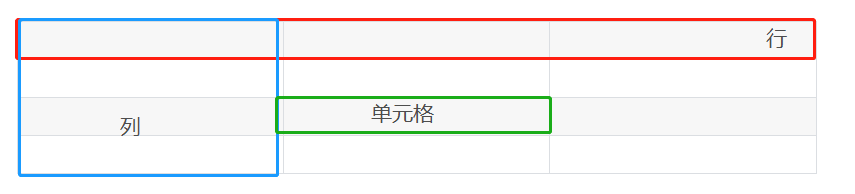
划分网格的线，称为”网格线“
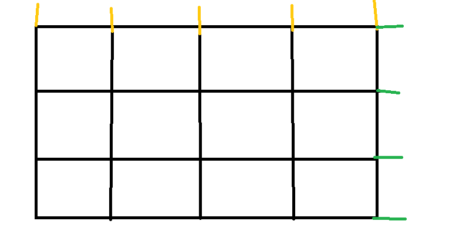
黄色的代表是列的网格线，绿色代表的是行的网格线
Grid和flex类似，布局的属性都是分为两类，一类定义在容器上，称为容器属性，一类定义在项目上，称为项目属性
display:grid指定一个容器为网格布局
html部分：
<div class="wrapper">
<div class="item">1</div>
<div class="item">2</div>
<div class="item">3</div>
</div>css部分
.wrapper{
width:450px;
background: #f3f3f3;
text-align:center;
display: grid;
grid-template-columns: 150px 150px 150px;
grid-template-rows: 150px 150px 150px
}
.item{
text-align: center;
border:1px solid #fff;
color:#fff;
font-weight: bold;
line-height: 150px;
}
.item:first-of-type{
background:#ef342a
}
.item:nth-of-type(2){
background:#00a0a0;
}
.item:nth-of-type(3){
background:#a0a0ff;
}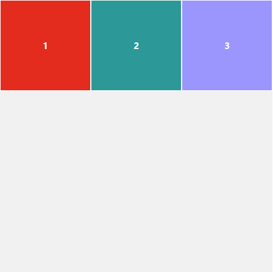
在这里我定义的三个网格都是宽高为150px
当然啦，我们也可以把它定义为行内元素，该元素内部就采用网格布局
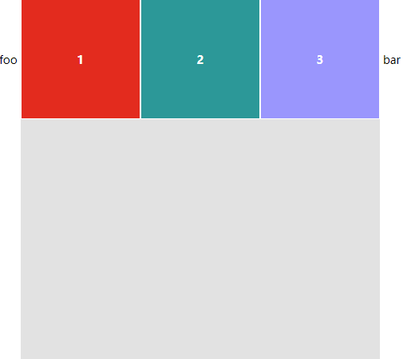
<span>foo</span>
<div class="wrapper">
<div class="item">1</div>
<div class="item">2</div>
<div class="item">3</div>
</div>
<span>bar</span>
grid-template-columns：用来指定行的宽度
grid-template-rows：用来指定行的高度
.wrapper{
width:450px;
background: #e5e5e5;
text-align:center;
display: inline-grid;
grid-template-columns: 150px 150px 150px;
grid-template-rows: 150px 150px 150px
}
上面这段代码指定的宽高各为150px
当然来，出来能指定具体的数值之外，也可以使用百分比来表示
.wrapper {
display: grid;
grid-template-columns: 33.33% 33.33% 33.33%;
grid-template-rows: 33.33% 33.33% 33.33%;
}有时候，重复写同样的值非常麻烦，尤其网格很多时。这时，可以使用repeat()函数，简化重复的值。上面的代码用repeat()改写如下
.wrapper {
display: grid;
grid-template-columns: repeat(3, 33.33%);
grid-template-rows: repeat(3, 33.33%);
}repeat接受两个参数：第一个数重复的次数（上面的例子是重复3次），第二个是重复的值（上面例子是33.33%）
repeat也可以是重复某种模式，例如下面的例子就是一只重复100px,20px,80px
<div id="wrapper">
<div class="item item-1">1</div>
<div class="item item-2">2</div>
<div class="item item-3">3</div>
<div class="item item-4">4</div>
<div class="item item-5">5</div>
<div class="item item-6">6</div>
<div class="item item-7">7</div>
<div class="item item-8">8</div>
<div class="item item-9">9</div>
</div>css部分：repeat（2，100px,20px,80px）
#wrapper{
display: grid;
grid-template-columns: repeat(2, 100px 20px 80px);
grid-template-rows: repeat(3, 100px);
}
.item {
font-size: 4em;
text-align: center;
border: 1px solid #e5e4e9;
}
.item-1 {
background-color: #ef342a;
}
.item-2 {
background-color: #f68f26;
}
.item-3 {
background-color: #4ba946;
}
.item-4 {
background-color: #0376c2;
}
.item-5 {
background-color: #c077af;
}
.item-6 {
background-color: #f8d29d;
}
.item-7 {
background-color: #b5a87f;
}
.item-8 {
background-color: #d0e4a9;
}
.item-9 {
background-color: #4dc7ec;
}有时候单元格的大小是固定的，但是容器的大小不确定。如果希望每一行或则每一列都尽可能的容纳更多的单元格，我们就可以使用auto-fill来自动填充
.wrapper{
display:grid;
grid-template-columns: repeat(auto-fill, 100px)
}为了方柏霓表示比例关系，网格提供了fr关键字（fraction的缩写，意为“片段”），如果两列的宽度分别为1fr和2fr，就表示后者是前者的2倍
<div class="wrapper">
<div class="item">1</div>
<div class="item">2</div>
<div class="item">3</div>
</div>css部分
.wrapper{
width:450px;
background: #f3f3f3;
text-align:center;
display:grid;
grid-template-columns: 1fr 2fr 1fr;
grid-template-rows: 150px 150px 150px
}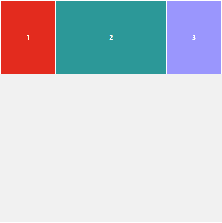
fr可以和绝对长度相结合一起使用
.wrapper {
display: grid;
grid-template-columns: 150px 1fr 2fr;
}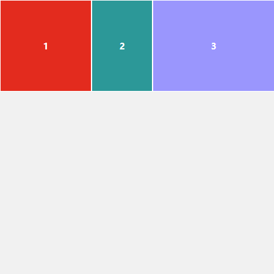
minmax() 产生一个长度范围，表示长度就在这个范围之中，它接受两个参数，分别为最小值和最大值
.wrapper{
grid-template-columns: 1fr 1fr minmax(100px,1fr);
}上面代码(minmax(100px,1fr))表示列宽不小于100px，不大于1fr
表示浏览器自己决定宽度
grid-template-columns: 100px auto 100px;上面代码中，第二列的宽度，基本上等于该列单元格的最大宽度，除非单元格内容设置了min-width，且这个值大于最大宽度
grid-row-gap：设置行与行之间的间隔
grid-colunm-gap：设置列于列之间的间隔
.wrapper {
grid-row-gap: 10px;
grid-column-gap: 10px;
}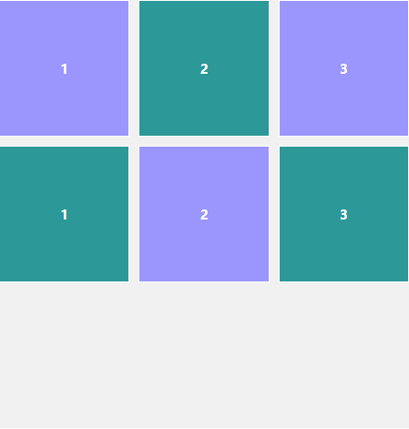
grid-row-gap和grid-colunms-gap合并简写的话,格式为grid-gap
.wrapper{
grid-gap: 10px 10px;
}如果省略第二个值的话，那么就默认第二个值等于第一个值
划分网格，容器的子元素排序是按照“先行后列”来排的通过该属性我们可以自定义排列的顺序
.wrapper{
grid-auto-flow:colunm;
}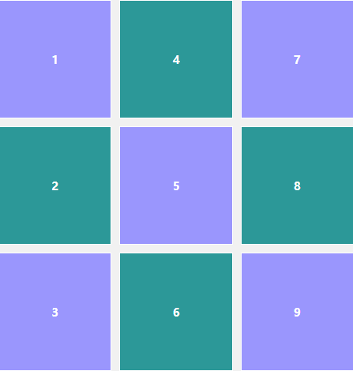
justify-items属性设置单元格内容的水平位置，align-items设置单元格内容的垂直位置
.wrapper {
justify-items: start | end | center | stretch;
align-items: start | end | center | stretch;
}这两个属性的取值是完全一样的
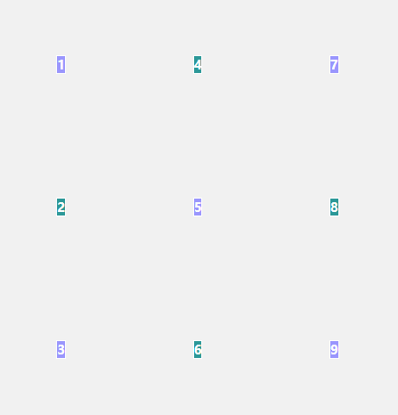
这个是在单元中内居中
place-item是两者的合并写法
place-items: <align-items> <justify-items>例子：
place-items: start end;justify-content属性是整个内容区域在容器里面的水平位置，align-content属性是整个内容区域在容器里面的垂直位置
.wrapper {
justify-content: start | end | center | stretch | space-around | space-between | space-evenly;
align-content: start | end | center | stretch | space-around | space-between | space-evenly;
}start
水平方向和垂直方向都是start
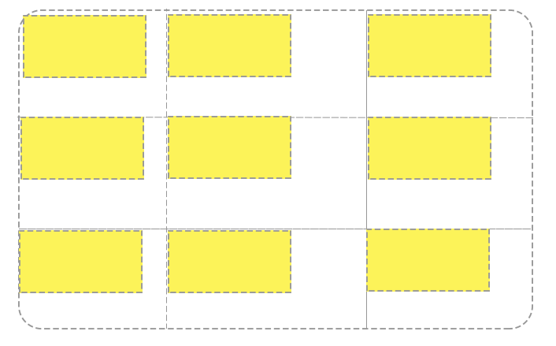
center
垂直和水平方向都是center
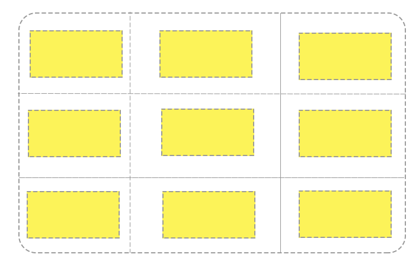
end
垂直和水平都是end
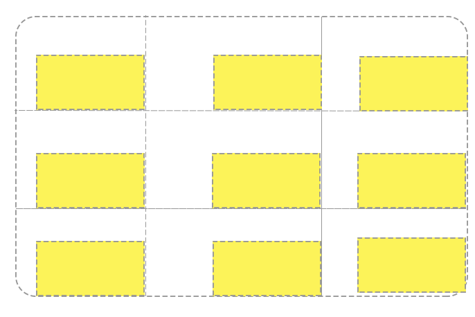
justify-content 属性是整个内容区域在容器里面的水平位置，align-conent属性是整个内容区域的垂直位置
.wrapper {
justify-content: start | end | center | stretch | space-around | space-between | space-evenly;
align-content: start | end | center | stretch | space-around | space-between | space-evenly;
}这两个属性的写法是完全相同的，取的值是一样的
项目的位置是可以指定的，具体方法就是指定项目的边框，分别定位在哪根网格线
grid-column-start属性：左边框所在的垂直网格线grid-column-end属性：右边框所在的垂直网格线grid-row-start属性：上边框所在的水平网格线grid-row-end属性：下边框所在的水平网格线.item-1 {
grid-column-start: 2;
grid-column-end: 4;
}
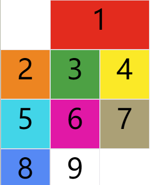
编号为1的项目水平方向的网格线是从2开始的，到4结束。其他编号的没有指定位置，由浏览器自动布局，这时它们的位置由容器的grid-auto-flow属性决定，这个属性的默认值是row，因此会"先行后列"进行排列。读者可以把这个属性的值分别改成column、row dense和column dense，看看其他项目的位置发生了怎样的变化。
下面的例子是列的网格线布局
.item-1 {
grid-column-start: 1;
grid-column-end: 3;
grid-row-start: 2;
grid-row-end: 4;
}
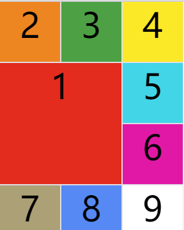
除了这个四个属性的值之外，我们还可以使用span关键字，表示占几个网格，类似table的colspan和rowspan
.item-1 {
grid-column-start: span 2;
}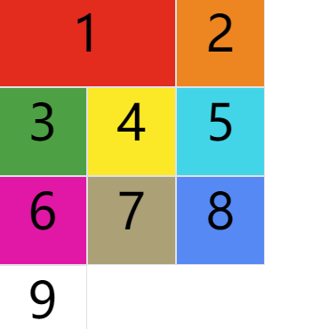
grid -column属性是grid-column-start和grid-column-end的合并写法，grid-row是grid-row-start和grid-row-end的合并写法
.item-1 {
grid-column: 1 / 3;
grid-row: 1 / 2;
}
/* 等同于 */
.item-1 {
grid-column-start: 1;
grid-column-end: 3;
grid-row-start: 1;
grid-row-end: 2;
}
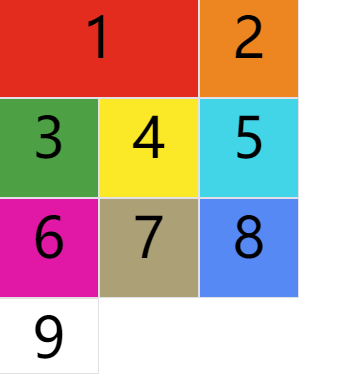
这两个属性也可以使用span关键字，表示跨越多少个网格
.item-1 {
background: #b03532;
grid-column: 1 / 3;
grid-row: 1 / 3;
}
/* 等同于 */
.item-1 {
background: #b03532;
grid-column: 1 / span 2;
grid-row: 1 / span 2;
}斜杠及后面的部分可以被省略，默认跨越一个网格
.item-1 {
grid-column: 1;
grid-row: 1;
}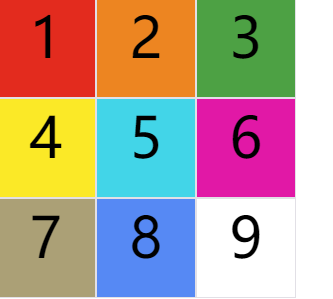